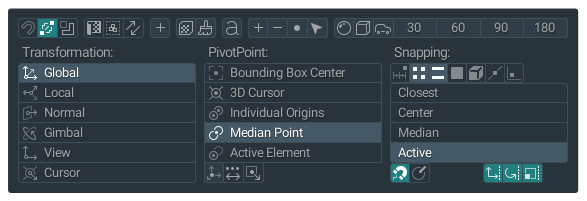
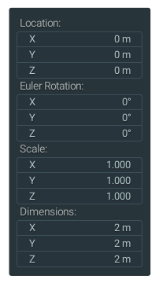
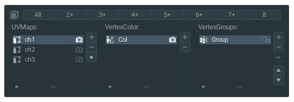

Menus
InteractionOps provides several context-sensitive menus for quick access to commonly used operations.
Main Menu System
iOps Transform, PivotPoint, Snap Menu
The primary menu system providing access to transform operations, pivot point selection, and snapping controls.

Features:
Transform mode selection
Pivot point switching
Snap element controls
Quick operator access
iOps Transformations Menu
Specialized menu for transformation operations and alignment tools.

Operations:
Object alignment tools
Rotation operations
Scale and positioning
Transform utilities
iOps Data Menu
Data management and object property operations.

Functions:
Object data operations
Material assignments
UV map management
Data cleanup tools
Menu Access
Default Access:
Right-click context menus
Hotkey combinations
Header menu integration
Pie menu alternatives
Customization
Menu Configuration:
Add/remove menu items
Customize hotkey assignments
Adjust menu positioning
Create custom menu layouts